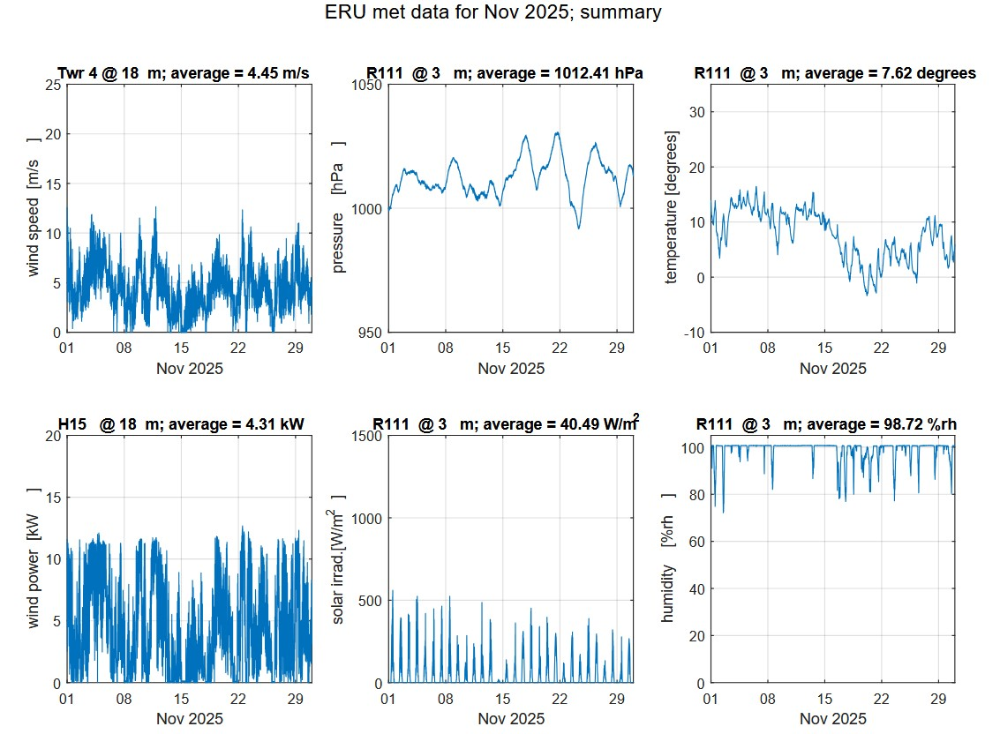
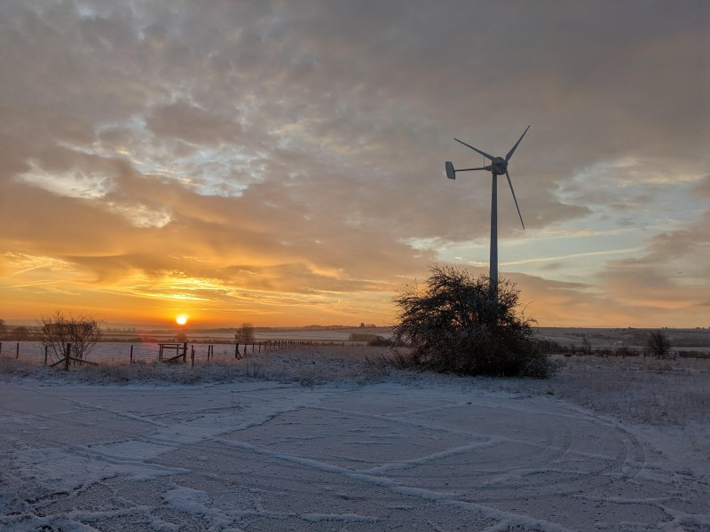
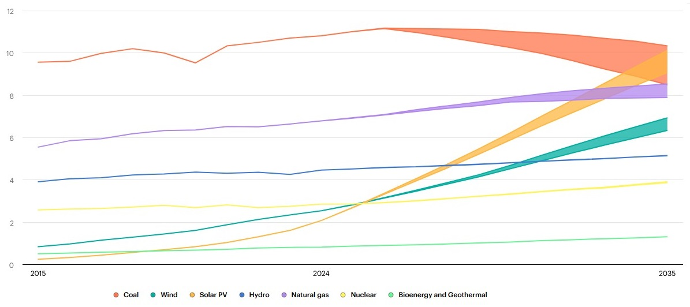
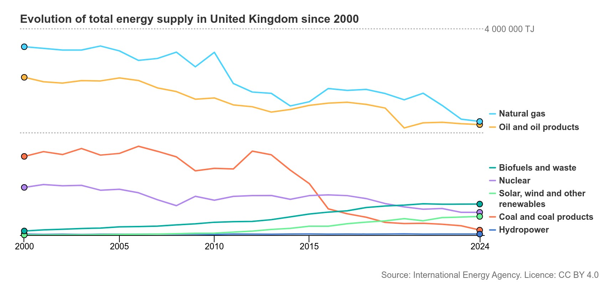
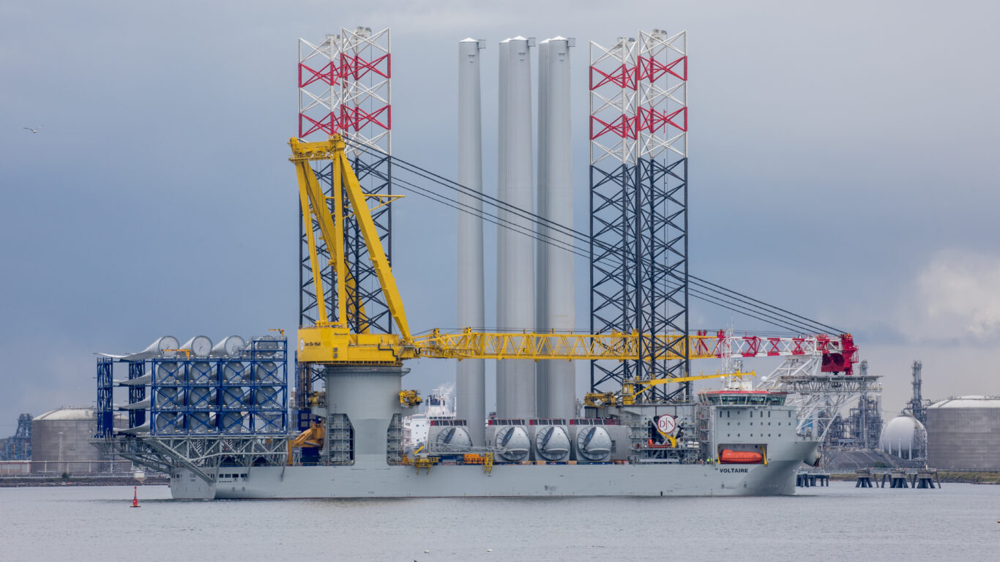
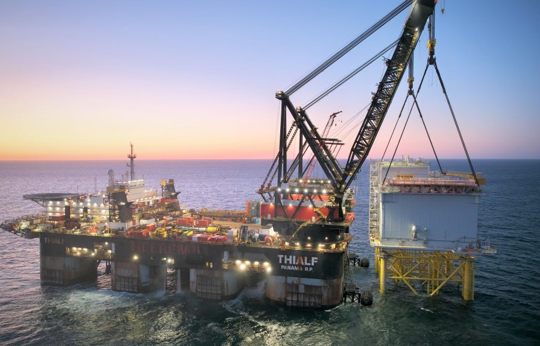
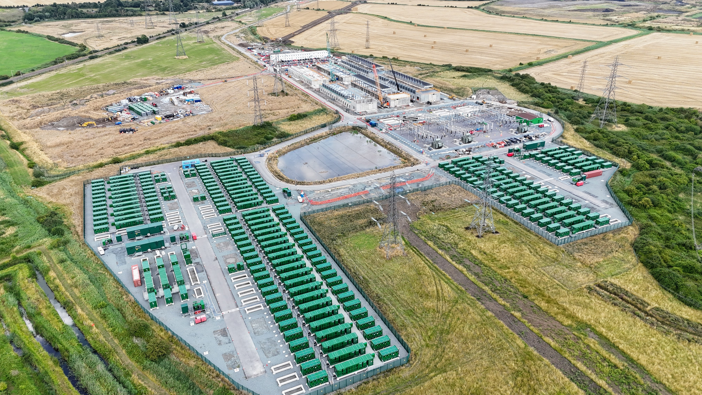
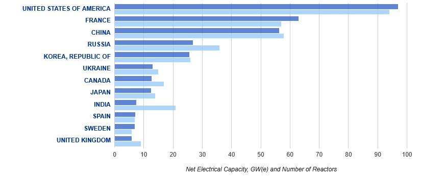
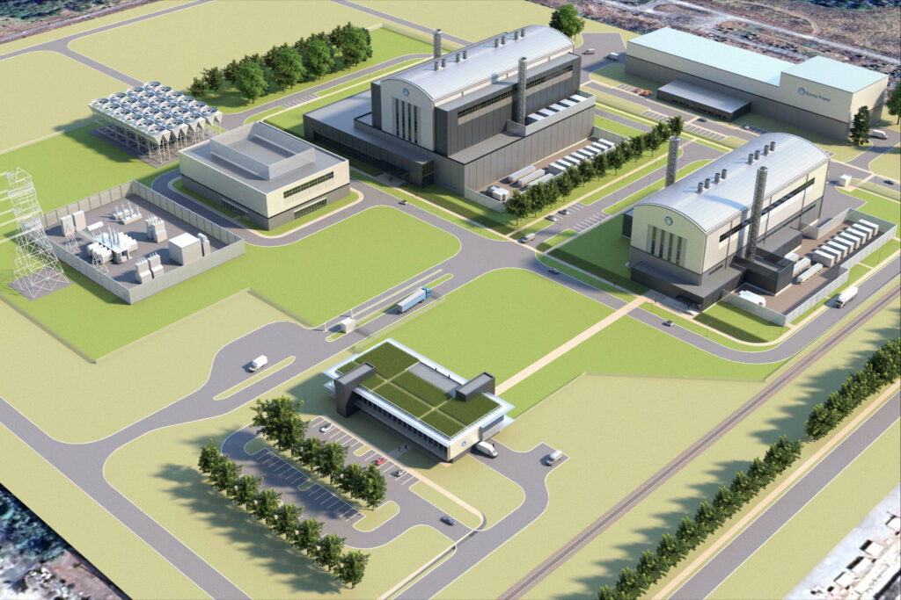

Reflections on the IEA world energy outlook 2025
3rd January 2026Coming down for breakfast as a child my siblings and I would often find an A4 printout of timeseries wind power generation for the previous day or month on the table, perhaps accompanied by a satellite photo or weather data. My dad, until recently, worked at STFC’s Rutherford Appleton Laboratories (RAL) in the Energy Research Unit (ERU) and was for many years involved in the maintenance of and experiments using the unit’s Windharvester turbine.
 Above: Energy Research Unit (STFC RUL, Harwell, UK) Meteorological Data November 2025 summary. Summaries for each month since 2010 are available here. Click to open full-size.{kind=link}
As I grew up, so did the UK’s wind generation capacity; as I recall, in our house this was a triumph, cause for celebration and hope. I saw turbines as heralds of a clean, modern future, in contrast to the unclean and outdated coal and gas station I saw in Didcot every day. These memories now serve as a reminder of the pace of energy transition the UK has achieved.
 Above: Energy Research Unit (STFC RUL, Harwell, UK) Britwind turbine, installed 2018. Click to open full-size.{kind=link}
So I’ve always been interested in energy, especially generation, and now working at Synaptec I have a professional interest in the sector in addition to a personal one. We produce passive sensors and monitoring systems which measure electrical characteristics in primary conductors and their sheaths. Today’s grids are complex and continue to become moreso – our technology gives operators otherwise unavailable information about their assets, locating faults in multi-zone transmission systems and identifying incipient faults in offshore wind connections before they result in outages.
Rather than taking a passing interest in the IEA’s world energy outlook, this year I’ve written out some loose notes to keep a record of key points and my thoughts.
Climate targets are slipping
No scenarios presented by the IEA meet the Paris agreement of limiting global warming to 1.5°C by 2030.
This doesn’t mean that ambition is completely gone, as the IEA opted not to publish a stated targets scenario until a sufficient body of governments submit their updated climate declarations. It seems that with 5 years to go to 2030 governments are having trouble not only meeting their pledges but even submitting them on time. So, until then, the most ambitious scenario presented is the net zero by 2050 scenario, which limits heating to 1.65°C, by 2100.
As a brief reminder, the IPCC’s 1.5°C report outlines the anticipated consequences of different degrees of heating and the 1.5°C target was established as a challenging yet feasible compromise between consequences and costs. Needless to say the slower we adapt the worse both become.
Indeed, the IEA emphasises the negative feedback loop between inaction and consequences; the importance of developing energy infrastructure resilience is becoming clear in the face of increasing extreme weather, exacerbated by climate change. Of course “resilience” is a principle not a strategy and requires a regionally-appropriate response, as areas experience different impacts. The IEA notes that, of all assets, transmission and distribution lines are particularly vulnerable.
A summary of the stated policies scenario (STEPS):
The stated policies scenario is developed by the IEA based on policies stated by governments or major stakeholders and which are given credibility by their feasibility and actions. Policies which reflect targets and which are not likely to be met are not included in the scenario. Headlines from the scenario:
 Above: Electricity generation in the Current Policies Scenario and Stated Policies Scenario, 2015-2035. For each source, the two bounds represent the conservative "current policies scenario" and the "stated policies scenario". Source. Click to open full-size.{kind=link}
- Total consumption grows 1% per year till 2035, with growth no longer led by China but instead India and other developing economies.
- Oil peaks at 2030, with a long tail – the single greatest determining factor is the rate of EV adoption, where government incentives and infrastructure deployment has progressed slower than anticipated, especially outside China and Europe. EV sales reach 50% by 2035, in the scenario.
- Gas peaks by 2030, with a tail-off slowed by growth in LNG exports from the USA and Qatar. Partially driven by European demand to substitute Russian pipeline imports, this could have the effect of reducing the cost of LNG and encouraging new markets.
- Coal declines in 2030, led substantially by China’s conversion of coal-dependent furnaces to electric-arc and electricity generation to renewable.
- Nuclear grows 40% by 2035, continuing to provide around 9% of supply. Renewables provide 2/3s by 2050. Share of fossil fuels is dropping, but absolute quantity is still increasing.
Demand continues to grow
For decades now, mature economies in North America and Europe have experienced fairly stable energy demand; improving efficiency has countered rising use and while energy mixes have changed over time, total use has remained approximately the same. That stasis is expected to continue no more with demand on the rise again, led primarily by adoption of EVs (which will push transport energy demand onto electricity grids), a growth in data centres (including for AI applications) and increased adoption of electric heating such as heat pumps.
Data centres are not the major growth factor at a global level, being responsible for around 10% of demand growth up to 2035. However, the speed of rollout and scale mean that in local power networks they will exercise considerable (in a way, outsize) influence over power developments. They will therefore have significant impacts in local power grids and generation. In the US particularly, the generation technologies which will meet this new demand is primarily fossil fuel and, later, nuclear.
Where demand has been growing, and continues to, is… everywhere else. Africa, Asia Pacific, Middle East and South America at a regional level continue to experience ongoing demand growth. In some areas this is a consequence of economic development - a particular source of secondary demand is for cooling as population size, urbanisation, job type and affluence combine to result in a huge need for air conditioning. In India, for example, the efficiency of air conditioning units is now a political issue of comparable scale to lighting efficiency.
Renewables on the rise
The past two decades has seen electricity generation from wind and solar grow rapidly and this trend of growth is set to continue to accelerate. Wind, solar and hydropower now meet one third of global electricity demand (around 15% of final energy consumption). In some regions this rollout has been transformational. In the UK, renewable supply expanded from 6% to 40% of electricity consumption in the ten years between 2010 and 2020.
 Above: Evolution of total energy supply in United Kingdom since 2000. Please note: "energy" refers to consumption of fuels, not only of electricity. Source. Click to open full-size.{kind=link}
Neither wind nor solar technology was meaningfully deployed until this century but the advancement of both primary and supporting technologies has led to ongoing improvements in efficiency, simulated generation, reliability and cost.
Most visibly, the size of turbines has ballooned to take advantage of an exponential increase in swept area for blade length. Average rotor diameter has more than doubled since 2010 and the largest rotors in deployment today sit around 190m diameter for onshore and 180m for onshore, and continue to increase. Peak generation capacity per turbine now commonly exceeds 15MW offshore, 5MW onshore. The notable challenge for wind technology going forward is disposal and recycling; colossal fibreglass or carbon fibre blades are challenging to recycle and indeed the race is now very publicly on for the industry to tackle this problem.
 Above: Wind turbines have continued to grow in size. Click to open full-size.{kind=link}
Less visible technological developments play a role too. Operational practices for laying subsea cables and installing turbine foundations, jackets or even floating bases in difficult conditions have developed. In the world’s largest offshore wind farm, Doggerbank, turbines are grouped into arrays and connected by subsea inter-array cables. The inter-array cables connect to offshore substations which convert the AC power to DC for more efficient transmission to shore via the export cable.
 Above: Installation of an offshore substation platform at the Doggerbank wind farm. Click to open full-size.{kind=link}
Here I am proud to say that Synaptec play an important role in supporting asset uptime; our sensors are monitoring phase and sheath current on each inter-array cable, as well as temperature at key connections. Our software system Greenlight is then able to combine this data to create a rich view of the performance and condition of the transmission assets, providing insights and early warning signs of incipient faults which conventional monitoring techniques cannot see.
The global expansion of Photovoltaic capacity is faster even than wind. Particularly encouraging is that 80% of projected demand growth is located in areas with a strong solar resource. There are challenges however. China dominates the manufacture of PV panels, something the US sees as a vulnerability and has not escaped from import tariffs. These tariffs are not yet confirmed but will certainly leave a lasting impact on the structure and location of the supplychain.
I don’t have much insight here but the cost of solar deployment in the US will surely rise, at least in the short term, while US policymakers will hope that domestic production can substitute for imported demand and even develop an export market. Manufacturers have already, and will likely continue to, geographically disperse their manufacturing to evade tariffs.
Biofuels take a step back
The IEA makes a clear statement about the future of biofuels and biogas: they are not set for the large growth that was previously forecast.
I remember in 2020, at the time of massive climate protests, learning that BP and other major petrochemical companies were planning to invest significantly into R&D for advancing liquid biofuel technology. I was sceptical because it would allow these companies, which had buried knowledge of the greenhouse effect, created a Petro-society and were now receiving widespread condemnation, to not only retain their business models but to act as bold custodians of society’s future. Biofuels can seem like a perfect solution – enabling the sort of comfort which can undermine more urgent actions. While countries like Brazil have a very high usage of biofuels like ethanol, I believe the challenges with biofuels are scalability, energy density and land use.
The extent of this backdown is dramatic. In 2020, BP planned to reduce oil and gas production by 40%, curtail new oil exploration, increase investments into renewables (solar and wind) and into electric car charging. Fast forward to 2025 and BP, in tune with other major oil and gas companies, has announced a strategy “reset” in light of shifting politics and increased profits.
They are now reducing renewables investment and significantly cutting spending on biofuels and biogas. The global EV rollout has perhaps, to some extent, won the technological race to supplant petroleum in road vehicles (versus, for example, biofuels or hydrogen) but has also been slower than anticipated and the associated high investment costs are now seen as unappealing – that part of its energy transition strategy is also to be cut.
New challenges are intensified
The IEC’s Standards Management Board’s 2024 theme “24/7 carbon-free” is echoed in the IEA’s “Age of Electricity” theme, which places an onus on both electrification and decarbonisation. Grids are faced with familiar but increasing challenges: more demand, pressure to narrow supply margins and also to offer cost-effective and reliable energy.
Increasing penetration of renewables means new technologies such as Grid Forming Inverters (GFMs - which synthesise power frequencies and phases rather than synchronising to an existing grid waveform) will become increasingly important, and energy storage, particularly batteries, are becoming a core part of grid infrastructure.
 Above: The UK's largest grid-connected battery storage facility at Tilbury. Source. Click to open full-size.{kind=link}
The increased penetration of renewable generation is outside the original design parameters of many countries’ power grids; in the UK for example, the grid was designed with relatively few and large, inertially stable power stations located fairly near to population and industrial centres. With dispersed and intermittent renewable generation, even in a small country like the UK, transmitting and balancing generation (for example, wind in Scotland) to consumption (for example, Southeast England) instantaneously is a complex problem, and one which is necessitating the UK’s largest power infrastructure investment in modern times. Each transmission line has a fixed capacity and allowance must also be made for outages and maintenance.
Increased grid electrification provides an opportunity for countries to achieve self-sufficiency, which the IEA sees as a goal to reduce energy conflict. More digital and advanced grids are however at greater risk of cyber attacks, resulting in an urgent need for better standardisation and adoption of cyber security measures. Global cyber attacks on energy infrastructure doubled between 2020 and 2022 and can be carried out for a variety of purposes – including randoms or military attacks. Indeed, the first successful cyber attack on a power grid was in Ukraine in 2015. Cyber security of grid assets will therefore become core considerations for both operators and national security stakeholders.
Geopolitical tensions over access to critical minerals are also set to intensify as a consequence of the increasing demand for renewables, grid-connected batteries and grid conductors. Raw materials such as Copper, Cobalt, Nickel, Lithium (which I wrote about in 2020) and Neodymium are now global concerns, with prices rising and insecure or highly-concentrated supply chains. In particular, China holds sway over the supply of numerous crucial modern materials.
Nuclear
I’ll state my position; I do not support the use of nuclear fission, perhaps not even as a small part of the global energy mix. I don’t think Nuclear fission is a sustainable technology - it’s a process which creates radioactive waste as part of normal operation and decommissioning (noting that the world has no permanent solution for high-level waste), incurs small but inherent risk of uncontrolled radiation (what we like to call a “nuclear accident”) and is an essential link in the chain of production of military weapons. To top it off, it’s one of the most expensive ways to make electricity.
This is a topic on which a lot could be said and perhaps I’ll write more on it in the future. For now, I’ll link to the UK Radioactive Waste and Materials Inventory and the Spent Fuel and Radioactive Waste Information System, published by the IAEA. Terminology guidance is here.
My grumblings aside at least temporarily, what’s happening with nuclear? The IEA projects capacity to grow 40% by 2035, continuing to provide around 9% of demand. IAEA data (see also this 2024 poster) shows that most of this growth, especially over the next 5 years, is in South and East Asia, especially India and China. Expansion in West Asia and Africa is more significant by rate but far smaller in absolute terms.
North American and European nuclear infrastructure is largely reaching or already surpassing intended lifetimes and both regions are planning to roll out new-generation fleets to replace ageing reactors. Neither region will significantly increase nuclear supply by 2030, if at all - new grid connections will begin shortly thereafter. Globally there are 415 reactors in operation (of which, 94 are in the USA, 57 in France and 58 in China) and 62 currently under construction.
 Above: Nuclear reactors and generation capacity for the 12 largest countries. Source. Click to open full-size.{kind=link}
A spotlight on the United States. The USA have built 2 reactors since 1978 and will not connect another to the grid before 2030. Over the past few years, plans by big tech companies to use corporate purchase agreements to finance a new fleet of small modular reactors (SMRs) have advanced, with Google for example proposing first generation by 2030. This privatisation of an industry traditionally heavily subsidized and regulated by government is reflected in India too.
 Above: Render of a proposed pilot SMR nuclear facility by Kairos energy in the TVA grid. Click to open full-size.{kind=link}
I’m sceptical of these claimed timelines and the way they serve to nullify popular concern about AI datacentre power consumption. The graphics above (and indeed, in many such announcements) use a soft video-game aesthetic which encourages the viewer to see the project in such terms, almost like a world-building simulation. In contrast, I'm concerned that privatisation at the same time as introducing a new technology and fleet risks undermining safety and responsible treatment of the radioactive waste, if such a thing is meaningfully possible.
Regarding the SMR technology itself, I’m not an expert but the key takeaways are that reactors would be manufactured in a factory setting before being transported for installation and use; that reactors would target capacities below 300MW in comparison to conventional stations which are often around 1000 MW; and that providers emphasise a focus on safety by design. SMRs currently operate only in China and Russia but a deluge of designs are proposed by organisations across the world, especially the US.
Closing reflections
As we enter the IEA's "age of electricity" there will be continued pressure on grids worldwide to meet increased demand with more renewables, fewer dependencies and at lower cost, all while under newfound climate stresses which will test resilience.
With five years to 2030 it's all but certain that net zero will not be achieved as hoped in the Paris agreement in 2015. Regardless, the pace of energy transition has been utterly unprecedented and will continue to drive change worldwide, a change which engineers must take responsibility for leading.
I am proud to play a part in developing products which support transmission resilience and offshore wind uptime. This is a crucial time to be involved in the energy sector and we should recognize the importance of the work we do - work which sits within a local, national and global context.